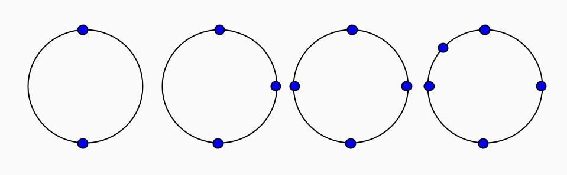

Eyebrows raise. Invisible networks you say … If you type
ifconfig
You’ll see all of the network devices currently up: probably eth0 (ethernet) or wlan (wireless), and a lo (loopback) device at least (ifconfig -a for all devices up or down). Little beknownst to you, these devices exist in a single network namespace: a place for them all to romp and play happily together. And by romp and play I mean they can be bridged together, they can masquerade as one another (I know, it’s awesome), or deliberately forward each other packets.
What if I told you that you could steal one of these network devices and put it in a private, invisible network? You might think, “Hmm, that means I can probably run X program on P port in both networks and they won’t conflict”. Correct. Then you might say, “Hey! I could also hide everything I’m doing in that invisible network from the rest of my machine”. Yep. But after a few minutes you’d probably say: “What! How do I communicate with the outside world?” I’d be worried too.
The answer: Virtual ethernet!
“Wait, what?” Virtual ethernet devices are created in pairs, where one “veth” device can talk directly to its peer, no matter what network you move either of them to. So if veth0 is in network A and veth1 is in network B, but network B is totally invisible to A, these networks can tunnel messages to one another over their veth secret chat line. A stranger doesn’t know anything about your private network topology other than a veth device exists. Pretty cool.
“Ok fine, how do I make an invisible network?” By making another network namespace, by making a pair of veth devices that can talk to each other, and by placing one in the new network namespace and the other in your current namespace. Command line setup involves:
Warning: some of these commands will fail with mysterious error messages if you’re not root. sudo su to save yourself the confusion.
In Terminal 1:
#!sh
# name a new network namespace
# this is not the network namespace you're in right now
# but we can enter it by name now at any time
ip netns add ns1
# check that the new network namespace is present
ip netns list
# create a pair of veth devices
ip link add host type veth peer name guest
# make sure you can see both host and guest (down)
ifconfig -a
# bring the host veth device up, it will exist in the current
# network namespace
ip link set host up
# give up the guest veth device to the new network
ip link set guest netns ns1
# assign an ip and subnet to the host veth
ip addr add 192.168.0.101/24 dev host
# check that the address shows up
ifconfig
In Terminal 2:
#!sh
# execute a bash shell in your newly named network
ip netns exec ns1 bash
# check that you can see the guest veth device (down)
ifconfig -a
# bring the guest veth device up
# assign an ip and subnet to it
ip link set GUEST up
ip addr add 192.168.0.102/24
# check that the guest veth device is up with an address
ifconfig
Drumroooool …. In Terminal 2:
#!sh
# check that you can ping the host veth device
# in the guest's network
ping 192.168.0.101
In Terminal 1:
#!sh
# set up a netcat listening server
nc -l 192.168.0.101 5555
In Terminal 2:
#!sh
# set up a netcat client
nc 192.168.0.101 5555
# say hi to the host veth device!
hi
You should see hi in Terminal 1. Mission accomplished.
“Ugh, how do I tear this down?” In Terminal 1:
ip link delete host
If you check Terminal 2, you’ll see that guest cannot live without it’s buddy, and has already committed suicide.
To come:
“Gah” you say. “I should probably be using something other than the dumbest way ever to resolve hash collisions in my super fast blah blah blah.” Or should you? A good hash collision resolution strategy:
Minimizes probing through your hash structure
Minimizes data cache misses
Why do these matter?
Speed! The more steps you take — the more indices you check — the farther your inserts and lookups get from O(1). The farther apart your key’s first hash location is from its new home in memory, the more cache lines you’ll need to load into your data cache. This takes time! You’re writing a super fast blah blah blah, remember?
“Well, I just want to choose a strategy.” Alright, then let’s have a method for doing so. For each strategy:
Insert and check the membership of n keys, where n is the size of the hash structure. Output probe counts for both insert and member. The lowest mean, median, and variance wins. n=4KB
Use valgrind --tool=cachegrind to profile cache miss rate with a virtual 32KB data cache. The lowest cache miss rate wins. n=64KB, so the structure doesn’t fit in the data cache.
The strategies implemented:
Chaining. Each index in your hash structure holds a linked structure (list or tree). Simply add your key to the end of the linked structure. Dead simple. code
Linear probing. Check the next index until you find an open place. Iterate through each index (starting at the one your key hashes to) to find it again, iterating through all keys if it’s not there. Also really simple. code
Quadratic probing. Check the next nth index until you find a place. N is determined by some quadratic function, so you’ll hop around the hash structure in wider strides. code
Double hashing. Check the next nth index until you find a place. N is determined by another hash function, so you’ll hop around the hash structure in different strides per key. code
Robin hood hashing. The idea is to evict keys from their place, and take their place, if you’ve traveled farther away from your original hash index than they have from theirs. Steal from the rich (the stupid bastards in your search path), and give to the poor (you who have traveled far). code
Probe Count.
| insert | member | |
| mean | 0.493 | 0.493 |
| median | 0.000 | 0.000 |
| variance | 0.565 | 0.565 |
| deviation | 0.751 | 0.751 |
| max | 4.000 | 4.000 |
| insert | member | |
| mean | 6.891 | 6.891 |
| median | 1.000 | 1.000 |
| variance | 3191.905 | 3191.905 |
| deviation | 56.496 | 56.496 |
| max | 2982.000 | 2982.000 |
| insert | member | |
| mean | 1.554 | 30.752 |
| median | 1.000 | 27.000 |
| variance | 2.062 | 357.251 |
| deviation | 1.436 | 18.901 |
| max | 76.000 | 87.000 |
| insert | member | |
| mean | 30.752 | 30.752 |
| median | 1.000 | 1.000 |
| variance | 27576.575 | 27576.575 |
| deviation | 166.061 | 166.061 |
| max | 3153.000 | 3153.000 |
| insert | member | |
| mean | 6.663 | 6.663 |
| median | 1.000 | 1.000 |
| variance | 3450.241 | 3450.241 |
| deviation | 58.738 | 58.738 |
| max | 2014.000 | 2014.000 |
First notice that all strategies except for robin hood hashing have the same statistics for both insert and member. Why? In robing hood hashing, once you insert a key it will probably be evicted from that index one or times. That means when you go to find it, you’ll probably have to probe farther than you did to insert it. Any insert can induce many evictions.
In robin hood hashing this shows up as member performing considerably worse than insert (the median is 27 times greater, and the variance skyrockets!). If your super fast blah blah blah is anything like a cache or ring, you’ll be doing more reads (lookups) than writes (inserts).
But the sky turns grey when we look at linear probing, quadratic probing, and double hashing. All three of these strategies are know to perform badly at >70% load [1]. We filled the hash structures up to 100%. Linear probing performs particularly ingloriously because keys with similar probe sequences clump: creating an uneven number of dangerious patches that cause lots of probing. Quadratic probing and double hashing perform better because they take wider strides over the hash structure, effectively “stepping over” these key clumps. While their mean probe counts are low (< 7), the variance is still much higher than robin hood hashing.
How about chaining? That dead simple strategy, remember? Chaining gets a lot of heat for wasting space: After you insert n keys into your size n hash structure, you could very well have many indices totally empty. There’s no mechanism for distributing the tails of the linked list into the space you’ve preallocated for the hash structure. But do we really care? The mean probe count is well under 1 and the variance is incredibly low. Clearly the winner so far.
Cache Misses.
| data refs | miss rate | |
| chaining | 109,316,426 | 0.3% |
| linear probing | 265,519,800 | 3.8% |
| quadratic probing | 127,420,471 | 1.9% |
| double hashing | 128,662,471 | 2.1% |
| robin hood hashing | 1,712,635,748 | 0.5% |
At first glance the cache miss rates look incorrect. Linear probing, with its inorder search of our preallocated structure, should have the most cache line hits, right? And if linear probing has the best cache line hit rate, then total cache misses should be lowest, right?
Well, if we weren’t loading tons of cache lines into memory anyway, essentially if both our mean probe count and our probe count variance were low, yep you’d be right. But right now it seems that the cache benefits of the linear probing strategy are totally overwhelmed by high probe counts. This could be made better if we were to fill our hash structure half full. By why give chaining so much heat if you’re now wasting 50% of your space?
Quadratic probing has a cache miss rate twice as small as linear probing. This means that despite making wider jumps around the hash structure, meaning that hitting the same cache line twice in a row was less probable, the decreased probe count seems to have made a huge difference. The same story can be said about double hashing, but less so because the wider jumps were less regular (the jump size varied by key).
Robin hood hashing and chaining performed marvelously, at less than 1% cache miss rate. Theoretically robin hood hashing has better locality than chaining: If it takes very little probing to insert or lookup each element stored in our preallocated hash structure, then we’re going to load few cache lines into our data cache.
In chaining, the only elements that are guaranteed good locality are the heads of the lists (stored in the preallocated hash structure). And these aren’t the elements we’re probing! We’re probing through the elements of the linked lists, which are allocated individually. How did chaining still beat robin hood hashing?
The answer: Remeber that with robin hood hashing, every insertion can induce many evictions? Even though the mean probe count and variance are low, robin hood hashing still causes us to load more cache lines than chaining does simply because each insert often triggers a flood of other inserts, sometimes leading us far away from our starting index.
Do you care about speed?
Keep it simple, just use chaining.Do you care about using your entire hash structure?
Use chaining with a good hash function, but if you must, use robin hood hashing.[1] Linear Probing with Constant Independence
Hash table: Collision resolution (wikipedia)
Choosing a quadratic probing function
Choosing a double hashing function
Robin hood hashing
Gallery of processor cache effects
Measuring cache misses
“Ugh, Statistics!” you say, “I became a programmer in order to avoid this shit.” Me too, my friend, me too. But there comes a time when you want to balance load between servers in a hash ring and you end up wondering “How many replicas of my servers do I need to be confident that my uniformly distributing hash function disperses those replicas evenly enough?” What you’d like is simply a function that takes the size of your key space, the number of servers you want to store in the ring, and returns the number of replications per server to maintain a nearly uniform distribution. Then you could move on with your life.
What does perfect look like? If your servers hash to 32-bit integers, then your hash ring has 232 potential hashes. Three servers uniformly distributed in a 32-bit space would be (232)/3 32-bit integers apart.
“When we add a new server, why don’t we just move all of the existing servers along the ring a little to make room for the new one?” Sorry. The point of using a consistent hash ring is to be able to remap as few data keys to new servers as possible when a server is added or deleted. If we changed the hash position of every server in the ring, we’d likely be remapping a lot of data keys to new servers.
Constraint. Move as few servers on the hash ring as possible.
Lazy. What’s the easiest way to be certain you have a uniform distribution over a space? Fill ALL the spaces! Imagine you’re using a 16-bit hash space. This isn’t crazy, since you’re only storing your servers in your hash ring usually. A 16-bit hash space means 216 or 65536 potential hashes. If you have no more than 100 servers, you could “replicate” — hash unique keys with your server name as the prefix — each server 650 times so that you would store 65500 keys in your ring.
Collisions? Just rehash with an incrementing postfix until you find a hash that isn’t taken.
Hash function? Use a fast one that produces uniformly distributed hashes and has good avalanche (collision resistance) behavior like the Jenkin’s hash.
How uniform is this? In the worst case, all 65500 are clumped together with a 65536-65500=36 gap. That means 36/65536 of your ring is not uniformly distributed, only 0.05%. Not bad.
What happens if you lose a machine? You go from 100 machines to 99 machines, so you mark the 650 hashes in your ring corresponding to the dead sucker for removal. Now you’ve gone from 65500 hashes to 65500-650=64850. Fewer machines means that you can have more replicas per machine. If we round down 65536/99 we get 661 replications. So we add 661-650=6 extra replicas per machine into the ring. We’re closer to 65536 now, with 65439 hashes in the ring.
What did that do to the likelihood that the ring is still just as uniformly distributed? Worst case we have gap of size 65536-65439=97, so 97/65536 of the ring is not uniformly distributed, still very low at 0.14%. As we approach zero machines, the likelihood that we’ll be able to evenly divide our machine count into 65536 increases (perfect uniformity!), so the ring will stay nonuniform in the 0-1% range. Also not bad.
“Wait, I have to keep track of up to 65536 ordered hashes?” Yep. You have to store all of those hashes and their metadata in memory somewhere. For 65536 16-bit hashes, this isn’t a big deal (around a megabyte with a string of IP metadata). What if you’re using 32-bit hashes, because you’ve got significantly more than 100 machines? That’s 4294967296 32-bit hashes with metadata (around 50 gigabytes), which most modern laptops cannot fit in RAM. If you’re using a sorted data structure (useful for finding the “next” machine in the ring for a given data key), that means O(log n) for lookups or insertions. That could also be quite annoying.
Hopeful. What if we were to find the largest gap in our ring and put our next hash right in the middle of this gap? Throw the hash function out the window! This is what would happen:

As we add servers, the ring is only balanced when we have 2n servers, at 2,4,8,16,etc. We’ll never be able to have a perfectly balanced ring with three servers, for instance, or any odd number for that matter. Removing servers is also a pain, because it’s not intuitive how we would rebalance. This is a hopeful approach, but don’t take it.
Empirical. We can still hash servers into the ring, and fewer of them than the entire ring, if we know what degree of nonuniformity we can handle. Empirically,
Here are the results for a 16-bit space and 32-bit space (code):
It was surprising to find that even 500 replicas of 3 servers in a 16-bit and 32-bit space could so readily result in a nearly (99%) uniform ring. This test was only run once and there needs to be averaging over several runs, but the take-home is that you need far fewer keys than the full hash space to produce uniform rings at 99% uniformity. Also more replicas with few servers is much better than more servers and few replicas.
Ok, so how many replicas of my servers do I need?
Simple: Choose the smallest bit-space that supports at least 500 replications per server.
Better: Run the tests! (and make the tests better!)
“Damnit”, you say. “Building this hash ring or routing this data means that I need to find the fastest hash function that isn’t horrible.” The reason you’ve said “Damnit!” is because what makes a hash function horrible is knowledge you’ve popped off your memory stack long ago. Simply put, a non-horrible hash function:
Distributes your keys randomly (evenly) across your key space
Avoids collisions with other keys
Maybe is irreversible
Maybe compresses your key into a checksum
Is quick!
What do you care about? Maybe you care that all your machines have the same load, so you care that your keys hash to a uniform distribution. Collisions don’t matter to you because you’re not storing anything about keys that hash to the same place. Maybe you want to avoid iterating through a data structure when multiple values are stored at the same place, so you care about minimizing key collisions. Maybe you care about garaunteeing that two messages aren’t the same very quickly. Maybe you care about how easy it would be to brute force find a collision for your hash. Irreversable output (160 bit large) matters most to you. But always, you care about “Moar speed!”
It’s easy to evaulate a hash function for speed (clock those cpu seconds), or output size (derp de derp, how many bytes is this thing?). Less obvious, a hash function produces a uniform distribution if:
Each pattern of output bits is equally likely
A hash function avoids collisions when:
Changing a single input bit drastically affects output bits
When you hear people talking about avalanche, this is what they mean. Formally, “drastically” means that if an input bit changes, each output bit should change with a 50% probability. When an input bit has a 0% or 100% affect on an output bit, we say that the output bit isn’t mixed. If this happens to a lot of your bits, then your hashing function mixes poorly. Your hash function will also avoid collisions if:
Output bits are independent of one another
Those are the three properities you’re looking for if you want your hash function to produce uniformly distributed and collision resistant output. Now that we know what we’re looking for and what we care about, let’s look at some options:
CRC32. Standing for cyclic redundancy check, this simply produces a 32-bit “tl;dr” of your message (a checksum), useful to checking whether your message was transmitted with errors. It’s computed by continuously dividing a smaller and smaller slices of the input by a polynomial, eventually resulting in a 32-bit remainder [1]. Pros. Since your polynomial is usually fixed, one can write very fast CRC implementations involving pre-computed lookup tables. Cons. A chi-squared test [2] shows that only half of the CRC32’s output bits were uniformly distributed; each input bit affects each output bit at less than 33% probability or greater than 66% probability (we want 50%), meaning that it has abysmal collision resistance [2].
FNV. Standing for its creators: (Glenn) Fowler/(Landon Cur) Noll/(Phong) Vo, FNV is a very simple hash function. The idea is to take a starting seed, and continually multiply it by a specific prime and XOR it with the next byte of your input. Pros. The simplicity of the algorithm makes it fast enough to be used as a checksum. Cons. Its simplicity makes it trivial to brute force find collisions. A chi-sqaured test shows that output bits are uniformly distributed up to only 214 [3]. It also appears that the last byte of the input does not cause any mixing at all [3], meaning that this function has poor collision resistance.
SIPHASH. The hipster on the block, SipHash is a relatively new hash function (2012) which boasts to have better collision resistance than FNV (not unimaginable) and to be just as fast or faster. There are few benchmarks available, some of them only comparing Cycles/Byte (and only between SipHash and several hmac implementations) [4], or language internal improvements over FNV [5]. I don’t have enough information to recommend this function in terms of uniform distribution or collision resistance, but its speed looks comparable to FNV.
JENKINS. Named after its creator Bob Jenkins, this hash function mixes keys 12 bytes at a time [6]. The mixing is a complicated sequence of shifts, adds, and XORs, making it non-trivial to implement. Pros. It produces uniformly distributed output, and has excellent collision resistance due to good mixing (every input bit causes a change in every output bit at 33-66% probability) [7]. Since the mixing can be done on parallel processors, it is still relatively fast. Cons. It is not cryptographically secure and it is easy to implement incorrectly.
SHA-1. Standing for Secure Hash Algorithm, this hash function produces cryptographic (hopefully irreversable) 160-bit output. We can compare SHA-1 to our other algorithms (which can produce 32-bit output) by XOR-ing the five 32-bit sections of the 160-bit output together. Pros. Cryptographic hashes need to be uniformly distributed and they need to mix well, or else finding collisions by brute force would be possible. SHA-1 has good mixing like Jenkins and produces output that is equally uniformly distributed [8]. It is also mostly cryptographically secure [9]. Cons. Computing a 160-bit hash takes cpu seconds any way you slice it, so it’s totally unnecessary if security isn’t required.
Know what you want your hash function to do, and what you can compromise to get there!
[1] Cylic redundancy check: wikipedia
[2] CRC32 test: Bret Mulvey
[3] FNV test: Bret Mulvey
[4] SipHash Bytes/Cycle benchmarks
[5] SipHash Haskell benchmarks
[6] Jenkins hash function: wikipedia
[7] Jenkins test: Bret Mulvey
[8] SHA-1 test: Bret Mulvey
[9] Bruce Schneier on SHA-1
Hobogen is an html compiler written in haskell. It is an extension of the minimalist blogging engine hobo.
Futex 0x3be6fec is generated by hobogen. I’ve used it also to generate my prose writings collection. Based on a set of mustache tags that you include in your html templates, and a posts that you write in simple (markdown)[http://whatismarkdown.com/], hobogen produces static html for:
Hobogen builds custom headers and footers into generated html using head.html and foot.html templates. These are good places to import css and javascript styles specific to your site. Hobogen inherits from hobo the ability to highlight code blocks specific to a particular language. Here is a sample of the hobogen code that compiles the archive page:
#!haskell
compileArchive ts cfg = do
rpaths <- getDirectoryContents (base cfg </> "posts")
let paths = (reverse . sort) rpaths
let archives = catMaybes $ map parseArchive paths
let groupedArchives =
L.groupBy (\(y1,m1,_,_) (y2,m2,_,_) -> y1 == y2 && m1 == m2) archives
(archiveTemplate ts) (sub groupedArchives)
In that code block, hobogen is reading all of the posts paths, sorting them in ascending dated order, parsing the parts of the posts for valid year, month, title and url data needed to construct the archive page (using the Attoparsec parser), grouping the posts written in the same year and month, and building the html from the archive template.
If you’d like to either to use or contribute to hobogen, contact me through github.